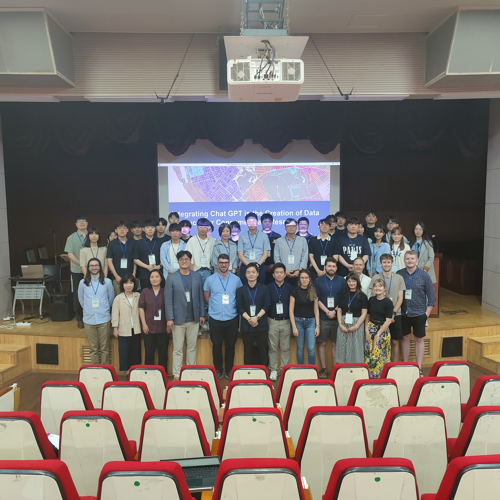

Korea Research Visit
Seoul, South Korea
Research Visit to South Korea
I recently co-ordinated the return visit to South Korea as a follow up to our earlier exchange with visitors from KRIHS last Autumn. Ten members of the GDSL headed to South Korea for 9 day visit, comprising research exchanges with KRIHS and other Korean academics in Sejong and at the University of Seoul, a visit to the Eco Delta Smart City project in Busan, and plenty of sightseeing.

Lessons Learned
As part of the original grant, money had been allocated to facilitate a return exchange where GDSL researchers would visit KRIHS in Korea for a series of knowledge expansion and exchange workshops. Part of my role as the postdoc to the PI on the grant was organising and co-coordinating this exchange, involving activities such as:
- Booking flights and travel for everyone
- Organising accommodation
- Getting visas in place
- Managing the grant budget, allocating daily expenses
- Scheduling keynote and lightning talks from GDSL representatives
- Preparing and delivering a presentation showcasing my own research
- Being the key point of contact during our visit to Korea for KRIHS and other representatives
This was a great learning experience for me, giving me first hand experience of how to effectively manage and spend grant money, and co-ordinate a large international exchange between Liverpool and institutes in Korea.
Photos


More Information
For a full breakdown of the grant activities, including a detailed overview of what we did whilst we were in Korea you can visit the website I have built (using Quarto), which showcases all of the activities that occurred as part of the grant. You can access the website here: “Supporting Post Pandemic Recovery and Resilience Through New Forms of Data”.